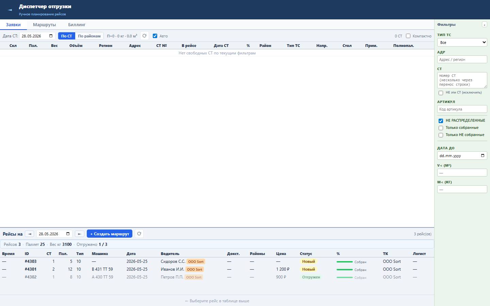
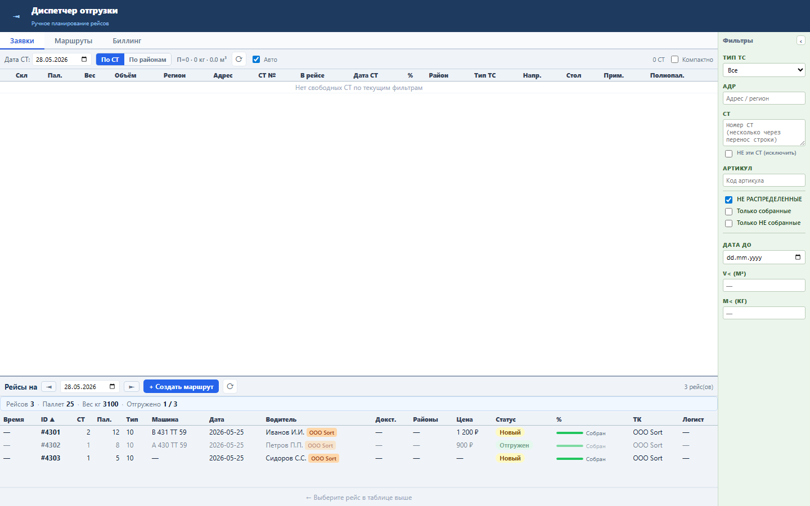

Блок помогает диспетчеру быстро упорядочить рейсы по ID, паллетам, машине, дате, цене, статусу и другим колонкам без нового запроса к серверу.
Сортировка работает по уже загруженному массиву tasks. Состояние хранит поле сортировки и направление. Пустые значения всегда остаются в конце списка.
Клик по заголовку сортирует по возрастанию, повторный клик переключает направление. В заголовке появляется стрелка.


Проверка: functional, UI smoke и load gate пройдены.